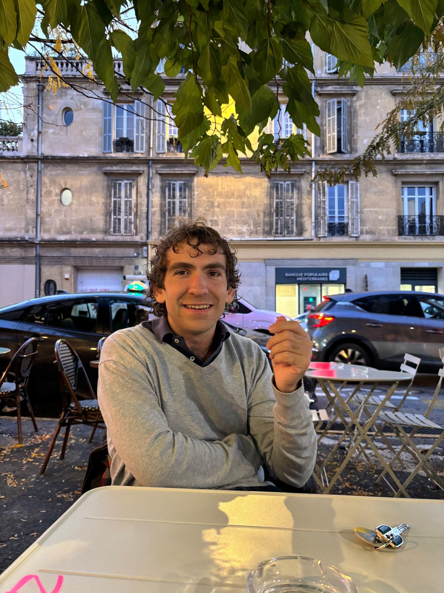

Pierre Bertrand
Maître de conférences en mathématiques appliquées (section CNU 26)
Aix-Marseille School of Economics (AMSE) · Faculté d'économie et de gestion, Aix-Marseille Université
Assistant Professor (Maître de conférences) in applied mathematics (CNU section 26)
Aix-Marseille School of Economics (AMSE) · Faculty of Economics and Management, Aix-Marseille University
Je suis maître de conférences à Aix-Marseille Université depuis 2024, membre de l'AMSE. Mes travaux portent sur les couplages de lois de probabilité sous contraintes de marges, la maximisation d'entropie, les divergences statistiques et l'optimisation stochastique en grande dimension.
J'ai soutenu ma thèse en 2021 au LPSM (Sorbonne Université), sous la direction de Michel Broniatowski et Jean-François Marcotorchino, sur le couplage d'indétermination. Ancien élève de l'ENS Cachan, ingénieur des Mines de Paris et agrégé de mathématiques, j'ai aussi une dizaine d'années d'expérience de data scientist dans l'industrie, chez Thales puis chez BNP Paribas CIB, jusqu'au rôle de Lead Data Scientist, et j'ai déposé deux brevets en apprentissage automatique.
I have been an Assistant Professor at Aix-Marseille University since 2024, and a member of AMSE. My research deals with couplings of probability distributions under marginal constraints, entropy maximization, statistical divergences and stochastic optimization in high dimension.
I defended my PhD in 2021 at LPSM (Sorbonne Université), supervised by Michel Broniatowski and Jean-François Marcotorchino, on the indetermination coupling. A former student of ENS Cachan, I hold an engineering degree from Mines de Paris and the French agrégation in mathematics. I also have about ten years of experience as a data scientist in industry, at Thales and then at BNP Paribas CIB, up to the role of Lead Data Scientist, and I filed two machine-learning patents.
RechercheResearch
Centres d'intérêtInterests
PrépublicationsPreprints
- Maximizing Rényi Entropy over the Transportation Polytope: Structure and Algorithm P. Bertrand Soumis àSubmitted to Journal of Optimization Theory and Applications, 2026 arXivHAL
- Elementwise Adaptive Random Search for High-Dimensional Constrained Continuous Global Optimization P. Bertrand, M. Broniatowski, W. Stummer Soumis àSubmitted to Journal of Global Optimization, 2026 arXivHAL
- Continuous indetermination and average likelihood minimization P. Bertrand, M. Broniatowski, J.-F. Marcotorchino 2021 arXivHAL
Publications
- Some smooth divergences for ℓ1-approximations P. Bertrand, W. Stummer Geometric Science of Information (GSI 2025), Lecture Notes in Computer Science 16033, 359–368, 2025 DOIarXivHAL
- Independence versus Indetermination: basis of two canonical clustering criteria P. Bertrand, M. Broniatowski, J.-F. Marcotorchino Advances in Data Analysis and Classification 16(4), 2022 DOIarXivHAL
- Minimization with respect to divergences and applications P. Bertrand, M. Broniatowski, J.-F. Marcotorchino Geometric Science of Information (GSI 2021), 2021
- Extracting future crime indicators from social media T. Delavallade, P. Bertrand, V. Thouvenot Factors Driving Future Crime, Springer, 2016
- The 1-2-3-Toolkit for Building Your Own Balls-into-Bins Algorithm P. Bertrand, C. Lenzen ALENEX 2015 ; annonce courte àbrief announcement at DISC 2014 arXiv
ExposésTalks
- Geometric Science of Information (GSI), octobre 2025October 2025
- Journées de Probabilités, juillet 2025July 2025
- Spark Summit East, 2016
- ALENEX, 2015
Relecture d'articlesRefereeing
- Geometric Science of Information (2025)
- Advances in Data Analysis and Classification (2021)
ThèsePhD thesis
Propriétés, applications et extension du couplage d'indétermination, Sorbonne Université (LPSM), 2021. Direction : Michel Broniatowski et Jean-François Marcotorchino. Properties, applications and extension of the indetermination coupling (in French), Sorbonne Université (LPSM), 2021. Advisors: Michel Broniatowski and Jean-François Marcotorchino.
BrevetsPatents
- Reconnaissance d'empreintes digitales par apprentissage profond (Thales, 2017)Fingerprint recognition with deep learning (Thales, 2017)
- Système de surveillance d'une installation industrielle (Thales, 2016)Monitoring system for an industrial facility (Thales, 2016)
EnseignementTeaching
Faculté d'économie et de gestion, Aix-Marseille Université (depuis 2024)Faculty of Economics and Management, Aix-Marseille University (since 2024)
- Mathématiques 1Mathematics 1 L1 Cours magistral (24 h), environ 200 étudiants. Lectures (24 h), about 200 students.
- Statistiques inférentiellesInferential statistics L2 Cours magistral (30 h), environ 200 étudiants. Estimation, tests statistiques. Lectures (30 h), about 200 students. Estimation, hypothesis testing.
- Mathématiques appliquéesApplied mathematics M1 Travaux dirigés (60 h). Optimisation sous contraintes (KKT), systèmes dynamiques et portraits de phase. Tutorials (60 h). Constrained optimization (KKT), dynamical systems and phase portraits.
AuparavantPreviously
- Data science pour l'actuariatData science for actuaries 2017–2024 Institut des Actuaires, Paris. Apprentissage automatique, apprentissage profond, Transformers ; travaux pratiques sur texte et images. Institut des Actuaires, Paris. Machine learning, deep learning, Transformers; hands-on sessions on text and images.
- Interrogations orales en MPOral examinations (colles), MP class 2013–2015 Lycée Hoche, Versailles. Lycée Hoche, Versailles.
Vie de l'universitéUniversity life
En tant que membre de l'université, je prends aussi part à des projets et à des tâches collectives : As a member of the university, I also take part in collective projects and duties:
- Analyse des flux d'étudiants de la Faculté d'économie et de gestion : outil de visualisation interactive des parcours et de la réussite depuis 2012, à partir des données d'inscription anonymiséesStudent flow analysis for the Faculty of Economics and Management: interactive visualization tool of student pathways and success rates since 2012, built on anonymized enrolment data
- Membre du jury de L2Member of the second-year (L2) examination board
- Rapporteur de mémoires de masterExaminer of master's theses
- Tuteur référent d'étudiants en apprentissageAcademic tutor for apprenticeship students
- Président de jury du baccalauréat, session 2026Chair of a baccalauréat examination board, 2026
Contact
pierre.bertrand.1 [at] univ-amu.fr
AMU – AMSE, 5-9 boulevard Maurice Bourdet, CS 50498
13205 Marseille Cedex 1, France